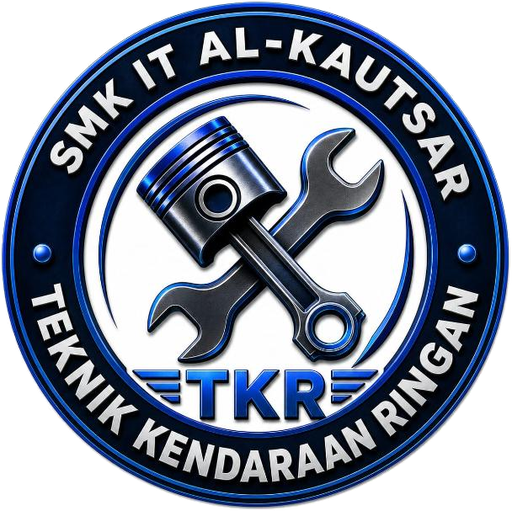

<!DOCTYPE html>
<html lang="id">
<head>
<meta charset="utf-8">
<meta name="viewport" content="width=device-width, initial-scale=1, viewport-fit=cover">
<meta name="robots" content="noindex">
<title>Kelola Konten | TKR SMK IT Al Kautsar Blitar</title>
<link rel="icon" href="logo-tkr.png">
<link href="https://fonts.googleapis.com/css2?family=Montserrat:wght@700;800&family=Plus+Jakarta+Sans:wght@400;500;600;700&display=swap" rel="stylesheet">
<style>
:root{--oranye:#FF5A14;--kuning:#FFC21A;--biru:#1550C9;--tinta:#0F1B3D;--abu:#5B6782;--garis:#DDE4F0;--latar:#F4F7FC;box-sizing:border-box;padding-top:env(safe-area-inset-top,0px)}
*,*::before,*::after{box-sizing:inherit}
body{margin:0;font-family:"Plus Jakarta Sans","Segoe UI",Arial,sans-serif;background:var(--latar);color:var(--tinta);font-size:15px}
h1,h2{font-family:"Montserrat","Plus Jakarta Sans",Arial,sans-serif;margin:0;letter-spacing:-.02em}
.tata{display:grid;grid-template-columns:250px 1fr;min-height:100vh}
aside{background:var(--tinta);color:#fff;padding:20px 14px;position:sticky;top:0;height:100vh;overflow:auto}
aside .merek{display:flex;gap:10px;align-items:center;margin-bottom:22px}
aside img{width:44px;height:44px;object-fit:contain}
aside h1{font-size:1.1rem;line-height:1.2}
aside small{color:#AFC0E6}
.tab{display:block;width:100%;text-align:left;background:none;border:0;color:#C9D6F5;padding:11px 12px;border-radius:8px;font:600 .95rem "Plus Jakarta Sans","Segoe UI",Arial,sans-serif;cursor:pointer;margin-bottom:2px}
.tab:hover{background:#1A2A57}.tab.aktif{background:var(--oranye);color:#fff}
.tab.terbit{margin-top:14px;border:1px dashed #3A4B7A}
main{padding:24px clamp(16px,3vw,36px);max-width:1000px}
.kepala{display:flex;justify-content:space-between;align-items:center;gap:12px;flex-wrap:wrap;margin-bottom:18px}
.kepala h2{font-size:1.6rem}
.status{font-size:.85rem;color:var(--abu)}
.tombol{padding:10px 16px;border-radius:9px;border:2px solid transparent;font:700 .9rem "Plus Jakarta Sans","Segoe UI",Arial,sans-serif;cursor:pointer;background:var(--oranye);color:#fff}
.tombol:hover{filter:brightness(.93)}
.tombol.dua{background:#fff;color:var(--tinta);border-color:var(--tinta)}
.tombol.biru{background:var(--biru)}
.tombol.hapus{background:#fff;color:#C62828;border-color:#F3C2C2;padding:7px 12px}
.tombol.kecil{padding:6px 10px;font-size:.82rem}
.kartu{background:#fff;border:1px solid var(--garis);border-radius:14px;padding:18px;margin-bottom:14px}
.kartu-atas{display:flex;justify-content:space-between;align-items:center;gap:10px;margin-bottom:10px;cursor:pointer}
.kartu-atas b{font-size:1rem}
.kartu.tutup .badan{display:none}
.bidang{margin-bottom:12px}
.bidang label{display:block;font-weight:700;font-size:.85rem;margin-bottom:4px}
.bidang input[type=text],.bidang input[type=date],.bidang input[type=number],.bidang input[type=url],.bidang input[type=password],.bidang textarea{width:100%;padding:10px 12px;border:1px solid var(--garis);border-radius:8px;font:inherit;background:#fff;color:inherit}
.bidang textarea{min-height:110px;resize:vertical;line-height:1.5}
.bidang .bantu{font-size:.8rem;color:var(--abu);margin-top:3px}
.dua-kol{display:grid;grid-template-columns:1fr 1fr;gap:0 14px}
.pratayang{display:flex;gap:10px;align-items:center;flex-wrap:wrap}
.pratayang img{width:90px;height:64px;object-fit:cover;border-radius:6px;border:1px solid var(--garis)}
.baris-teks{display:flex;gap:8px;margin-bottom:8px}
.baris-teks input{flex:1}
.info{background:#FFF7DD;border:1px solid #F5DB86;border-radius:10px;padding:12px 14px;font-size:.88rem;margin-bottom:14px;line-height:1.55}
.notif{position:fixed;right:20px;bottom:20px;background:var(--tinta);color:#fff;padding:12px 18px;border-radius:10px;font-weight:600;opacity:0;transform:translateY(10px);transition:.25s;pointer-events:none;max-width:90vw}
.notif.tampil{opacity:1;transform:none}
.urut{display:flex;gap:4px}
@media(max-width:820px){.tata{grid-template-columns:1fr}aside{position:static;height:auto;display:flex;flex-wrap:wrap;gap:4px}aside .merek{width:100%;margin-bottom:8px}.tab{width:auto}.dua-kol{grid-template-columns:1fr}}
</style>
</head>
<body>
<div class="tata">
  <aside>
    <div class="merek"><div><h1>Kelola Konten</h1><small>TKR SMK IT Al Kautsar</small></div></div>
    <nav id="tabs"></nav>
  </aside>
  <main id="panel"></main>
</div>
<div class="notif" id="notif" role="status"></div>
<script src="konten.js"></script>
<script src="admin.js"></script>
</body>
</html>
